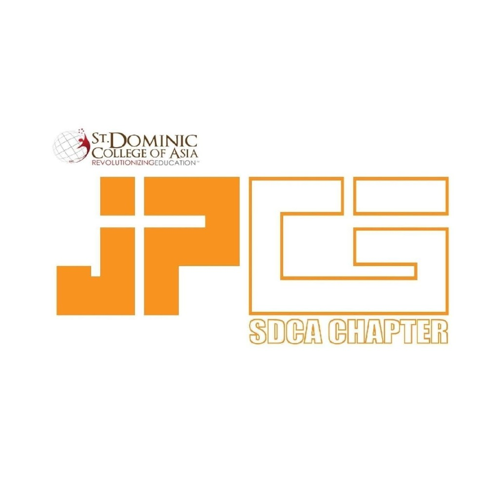

Key Contributions
- Prepare and manage organizational documents, including concept papers and request letters.
- Supported the organization and its members in completing key tasks and initiatives.

About me
Hi, I'm Amira Rachel Marqueses, a 4th-year BSIT student at St. Dominic College of Asia. I aspire to become a software developer and create meaningful applications that blend functionality with great design.
My passion for software development comes from a love for problem-solving and building useful tools. I'm driven by the opportunity to turn ideas into real-world solutions, whether it's simplifying everyday tasks, helping others, or creating new experiences. I'm committed to continuous learning and always seeking opportunities to grow, collaborate, and take on exciting challenges.
About — Leadership
Key Contributions
Key Contributions

2025–2026Key Contributions